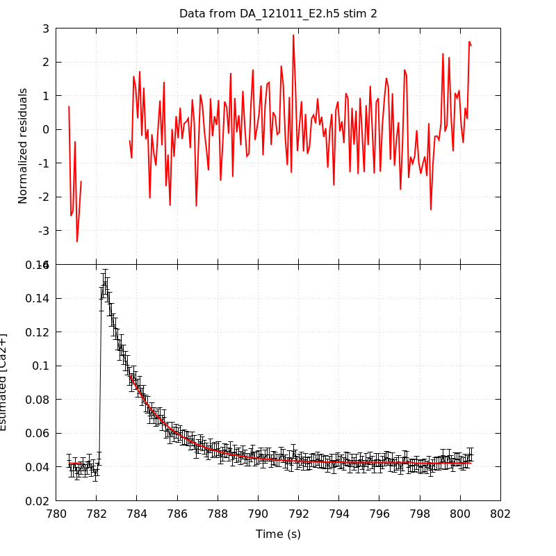
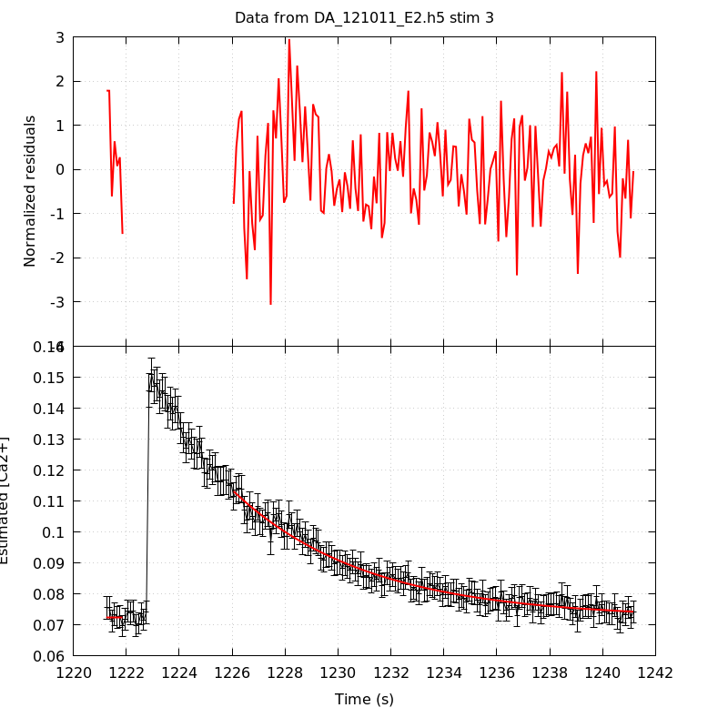
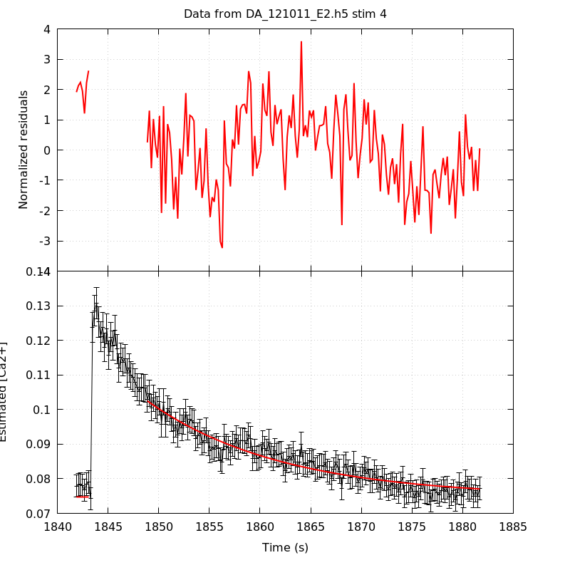

The baseline length is: 7.
When fitting tau against kappa_Fura only the transients for which the fit RSS and the lag 1 auto-correlation of the residuals were small enough, giving an overall probability of false negative of 0.02, were kept (see the numerical summary associated with each transient).
The good transients are: 2, 3.
Not enough good transients to keep going!
The time at which the 'good' transients were recorded appear in red.
On each graph, the residuals appear on top. Under the null hypothesis, if the monoexponential fit is correct they should be centered on 0 and have a SD close to 1 (not exactly 1 since parameters were obtained through the fitting procedure form the data.
The estimated [Ca2+] appears on the second row. The estimate is show in black together with pointwise 95% confidence intervals. The fitted curve appears in red. The whole transient is not fitted, only a portion of it is: a portion of the baseline made of 7 points and the decay phase starting at the time where the Delta[Ca2+] has reached 50% of its peak value.
The time appearing on the abscissa is the time from the beginning of the experiment.
Transient 1 is a 'bad'.

nobs = 186
number of degrees of freedom = 183
baseline length = 7
fit started from point 21
estimated baseline 0.0340468 and standard error 0.000323908
estimated delta 0.0661704 and standard error 0.0038857
estimated tau 0.808245 and standard error 0.0621
residual sum of squares: 426.211
RSS per degree of freedom: 2.32902
Probability of observing a larger of equal RSS per DOF under the null hypothesis: 1.87922e-21
WARNING: THE FIT IS NOT GOOD!
Lag 1 residuals auto-correlation: 1.159
Pr[Lag 1 auto-corr. > 1.159] = 0.000
Transient 2 is 'good'.

nobs = 177
number of degrees of freedom = 174
baseline length = 7
fit started from point 30
estimated baseline 0.0423806 and standard error 0.000203824
estimated delta 0.0523367 and standard error 0.00105707
estimated tau 2.14881 and standard error 0.0657425
residual sum of squares: 202.185
RSS per degree of freedom: 1.16198
Probability of observing a larger of equal RSS per DOF under the null hypothesis: 0.070574
Lag 1 residuals auto-correlation: 0.150
Pr[Lag 1 auto-corr. > 0.150] = 0.038
Transient 3 is 'good'.

nobs = 159
number of degrees of freedom = 156
baseline length = 7
fit started from point 48
estimated baseline 0.0722043 and standard error 0.000437676
estimated delta 0.0409214 and standard error 0.000631848
estimated tau 5.02954 and standard error 0.192819
residual sum of squares: 173.463
RSS per degree of freedom: 1.11194
Probability of observing a larger of equal RSS per DOF under the null hypothesis: 0.160741
Lag 1 residuals auto-correlation: -0.004
Pr[Lag 1 auto-corr. > -0.004] = 0.493
Transient 4 is a 'bad'.

nobs = 172
number of degrees of freedom = 169
baseline length = 7
fit started from point 35
estimated baseline 0.0747292 and standard error 0.000461961
estimated delta 0.0277771 and standard error 0.000532699
estimated tau 13.2325 and standard error 0.669589
residual sum of squares: 290.504
RSS per degree of freedom: 1.71896
Probability of observing a larger of equal RSS per DOF under the null hypothesis: 1.82029e-08
WARNING: THE FIT IS NOT GOOD!
Lag 1 residuals auto-correlation: 0.741
Pr[Lag 1 auto-corr. > 0.741] = 0.000
2 out of 4 transients were kept.
sigma(tau): 0.0657425, 0.192819
Residual correlation at lag 1: 0.14991920663820357, -0.00421235174644544
Probablity of a correlation at lag 1 smaller or equal than observed: 0.038000000000000034, 0.493
RSS/DOF: 1.16198, 1.11194